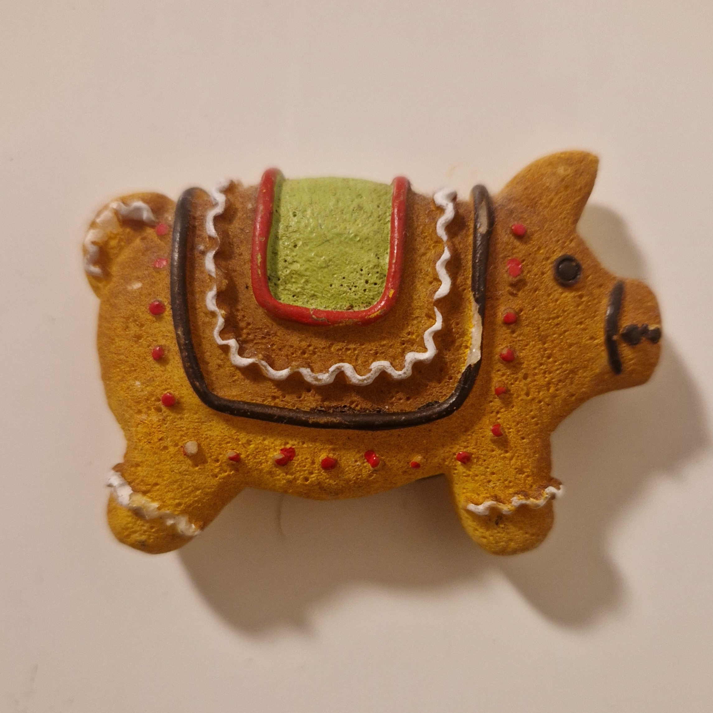
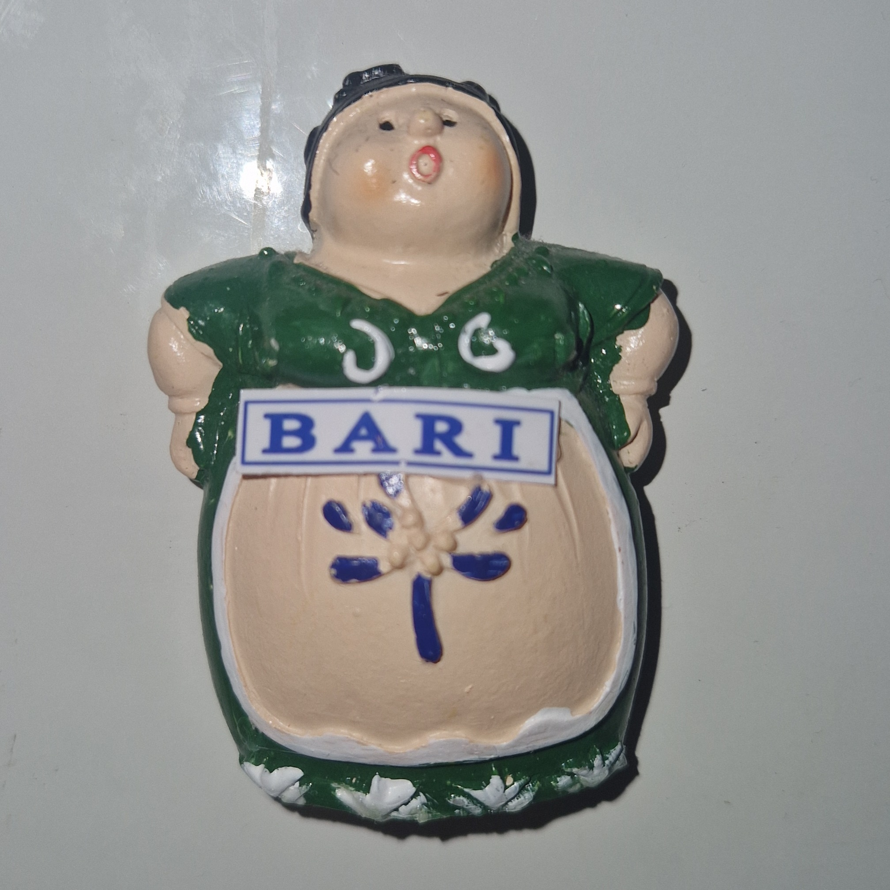

|
Sapa, Vietnam |
May 2025 |
Jacopo, Linh, Leti, Mere |
On the tallest mountain of Indochina |
 |
Hanoi, Vietnam |
May 2025 |
Jacopo, Linh, Leti, Mere |
After visiting Ho Chi Minh's mausoleum |
 |
Chongqing, China |
April 2025 |
Jacopo, Mere |
16 hours of sleep deprivation on the way to Hanoi |
 |
Bologna, Italy |
December 2023 |
Jacopo, Linh |
Romantic holiday with lot of good food |
 |
Ninh Binh, Vietnam |
September 2024 |
Jacopo, Linh, Mario |
Being driven on the river, sweating |
 |
Ha Long, Vietnam |
August 2024 |
Jacopo, Linh, Khanh, An |
Swimming together after a surprising cave |
 |
Nüremberg, Germany |
April 2024 |
Jacopo, Linh, Marcel, Viganó |
A nice free tour full of unrealistic stories |
 |
Würzburg, Germany |
January 2025 |
Jacopo, Linh, Nick |
With the town covered in snow, drinking Glühwine |
 |
Polignano a Mare, Italy |
August 2023 |
Jacopo, Linh, Sten, Bea |
Relaxing on the beach |
|  |
Saronno, Italy |
2023 |
Jacopo, Linh |
Representing the city with our second home |
 |
Como, Italy |
January 2023 |
Jacopo, Linh |
A nice apertivo and some presepe character |
 |
Lucca, Italy |
August 2023 |
Jacopo, Linh, Mario |
Spending time with Mario close to Viareggio |
 |
Karlsruhe, Germany |
June 2023 |
Jacopo, Paglia, Ge, Marcel, Tobi |
First festival with some of the lesi |
|  |
Bari, Italy |
August 2023 |
Jacopo, Linh |
Eating and wondering in the old town |
 |
Masada, Middle East |
December 2021 |
Jacopo, Marcel, others |
Learning about how the roman conquered this area |
|
Salzburg, Austria |
March 2024 |
Jacopo, Linh |
Walking in the town of Mozart |
 |
Alberobello, Italy |
August 2023 |
Jacopo, Linh |
In a city with a magical atmosphere |
 |
Augsburg, Germany |
2024 |
Jacopo, Linh |
Representing the city with our second home |
|
Viareggio, Italy |
August 2023 |
Jacopo, Linh, Mario |
Summer holiday with Mario |
 |
Füssen, Germany |
July 2024 |
Jacopo, Linh |
From the Disney castle to the street art of Füssen |